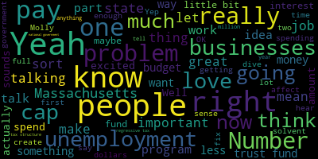

[Unidentified]: And we are live.
[Callahan]: Hey, everybody. It is great to be back. I'm really excited today to be talking to Molly Kivy, who I met while we were knocking on doors. She's a resident of the 34th Middlesex. And we are going to be talking about unemployment. As I'm sure everyone watching can understand, unemployment is one of those policies that has really kept tens of thousands of families afloat. It's unbelievably important to people who have been put out of work by the pandemic. But it also is in some ways sort of keeping our economy going right now. So it's a crucially important program that I think most people think it's probably running fine, but it actually has some very deep structural problems. And I'm really excited to talk to Molly. And let's go ahead and bring Molly on now.
[SPEAKER_00]: Hi, Anne. Thank you for having me. I'm excited to talk about unemployment. and kind of dive deep into the tax structure.
[Callahan]: Fabulous. First, I would love to just ask you a little bit about why this is so important to you. When I read through your proposals, I see so much work has gone into this. It's really incredible and very impressive. And I would love to hear your story about why this is so important to you and why you've decided to spend so much of your time trying to fix unemployment.
[SPEAKER_00]: So unemployment as a social insurance, it dates back to the 1930s in response to the Great Depression. This was FDR, this is one spoke of the New Deal legislation that FDR created to bring, to help the American public bounce back. It is used as an economic stabilizer to stop the individual from entering economic crisis. And if you stop the individual from economic crisis, then you're helping the macroeconomy not dip into an economic crisis. to put money into the pocket of somebody who lost their job at no fault of their own, you sustain their purchase power, meaning that they're not going to experience unexpected housing issues, unexpected issues with food or with medical necessities. Unfortunately, right now, The tax itself and the way it's levied on employers is not equitable. And that has created a lot of systemic issues with the program itself. But before we dive into that, I'll explain just why I feel very passionate about the subject. Personally, growing up, I grew up on a farm and that farm was not making enough to put food on the table, so my dad got a job in construction, and cyclically or between jobs, my family would rely on unemployment to put food on the table. So I have a personal connection with understanding how people rely on the social insurance to take care of their families. And I understand that the benefit payments, they do not, Currently they do not, they don't consider purchase power. So I know that there are families hurting out there and not being able to pay their bills and not being able to feed themselves.
[Callahan]: Yeah, it's an incredibly important program and it sounds like you, because of your upbringing and the cyclical nature of certain jobs, there are jobs where that's the job, right? And it's just a crucially important program. Can you talk a little bit about what are some of the problems? And not too much, we can dive in, but if you can kind of summarize some of the problems at first, then we'll dive in.
[SPEAKER_00]: So there's five main problems that I would like to highlight. There are others, but these are the main structural issues that if they are fixed, it would help the Massachusetts out a lot. And the first one is sustaining purchase power. Purchase power is the It's the concept that an individual has the ability to afford food, housing, health care, and basic needs. When FDR first developed this program, the main objective was to sustain purchase power of the individual. So that is not being considered with benefit payments. Number two is the tax structure itself. is regressive, meaning that the small business owner is paying a higher effective tax rate than a larger business owner.
[Callahan]: Yeah, when I first heard that from you, I thought that was crazy. I had no idea. Yeah.
[SPEAKER_00]: Yeah. It was really surprising for me to look at it, and it didn't make sense economically, like why it's behaving like that. But we can dive into how this legislation gets passed and how it's a problem for decades now. Three, the way the tax rate is calculated, it is through an experience rate system. So if an employer experiences layoffs, their tax rate goes up. This sounds like a good idea, and like it's incentivizing stable employment throughout the economy. But there are studies that show that it does not actually have that effect. And that tax rate actually ends up going higher for smaller businesses. during economic recessions when they can least handle a tax rate hike. The fourth issue is smaller businesses effectively pay a higher tax rate. And this is because smaller businesses in aggregate pay their employees a smaller wage and larger businesses can afford to pay their employees a larger wage, and because of the tax ceiling, what ends up happening, smaller businesses end up paying the same nominal amount in taxes as a larger business that has a larger proportion of salary to pay their employees. That part I could definitely explain a little bit more later.
[Callahan]: Is that the part where there's like a cap on the amount that, is that that part you're talking about, that there's a cap on the amount that businesses pay?
[SPEAKER_00]: Exactly. So the way the unemployment tax is levied, it's levied on the employer and it is a tax rate multiplied by the base, and the base of this tax is the employee's salary. Now, Instead of the base being the employee's full salary, it is capped at $15,000. Wow. Oh man. Okay.
[Callahan]: Okay. Yeah, I got it. That's the fourth one. Right. And the fifth one?
[SPEAKER_00]: Fifth. That would be the trust fund solvency. Now, what that means is that there's a bucket of money that the taxes go into and that the benefit payments get paid out of. And that bucket of money, it is over, there are certain benchmarks that the Department of Labor has set for to make sure that there's enough money for normal times and recessionary periods. Unfortunately, our representatives have decided to ignore those benchmarks and not create a solvent trust fund. We run out of money, right? Yeah, yeah, yeah. In a report that came out from Mass Budget and Policy just yesterday, they agreed with some of my research saying that, yeah, our reps have decided to just kick the problem down the road.
[Callahan]: So let me see. I don't know if I can remember the five. Let me try. So one is it doesn't pay people enough to get by. Yes. Right? Number two is that Number two was something about small businesses paying into more than big businesses, but not the cap, right? Right, yeah. It's a regressive tax structure. It's a regressive tax structure. It just by its nature, even without the cap, it's a regressive tax structure. Number three is that, I forgot this one.
[SPEAKER_00]: Yeah, so the employer's tax rate increases at times of recession. Oh, man.
[Callahan]: Yeah. That's crazy, that just doesn't, it punishes businesses that have to lay off workers. Which in the end does not do, just as in punishing people for criminal offenses does not in the end lead to people behaving better, same thing with businesses.
[SPEAKER_00]: And surprisingly, we're the only nation, nevermind the only developed nation in the world that uses the experience rating system.
[Callahan]: Well, that tells you a lot. Number four is the cap, but they cap the amount that the salary that gets taxed, and then businesses that pay above that salary, that the tax is not applied. And the fifth one, which in some senses is a giant one that affects all sorts of things, is that Massachusetts does not, we don't have money in the funds to pay for this program. And I'm excited to hear you talk about it, because I only know all of this stuff from you. But apparently, because we don't meet these standards, we now don't get interest-free loans. We now have to pay all this money to, I presume, Wall Street banks. Just to service the loans, I'm being able to pay for the unemployment. So it's really problematic.
[SPEAKER_00]: So the Department of Labor, they set these benchmarks to create a solvent trust fund so that the state would be prepared for tough times like this. And to incentivize that solvency, there are two main mechanisms to incentivize a healthy program. One is the state is eligible for interest-free loans, like you were just saying. So we would borrow that from the federal government and that would get us through those tough times to pay out the benefit payments. Currently, the trust fund is projected to be $4.7 billion in the red for 2021 compared to 2008, the Great Recession. We were, let me check my figure for a second. We were $2 billion in the red. So right now we are in a lot worse of a situation than we were in 2008. Yeah, and before COVID,
[Callahan]: were we already not solvent?
[SPEAKER_00]: Correct. We have not hit Department of Labor benchmarks for decades. The last time, in 2011 and 2014, there were talks within our state legislature to up the wage base. In 2011, at that time, increasing this tax was thrown into the same conversation of increasing the minimum wage. Special interest groups like the Boston Chamber of Commerce and AIM, they were saying that they would entertain the idea of increasing the minimum wage if the reps did not increase the unemployment tax. Wow. Um, what ended up happening? No minimum wage increase was enacted that year. And the wage base, it was increased by $1,000, but they, um, they edited the tax tables. So it netted into a tax decrease on total payroll. Um, and 20, uh, The other spoke of that problem, if we don't hit these benchmarks, is there's a business tax credit that is tied into it. This tax credit is a payroll tax credit. It's called the FUTA tax credit, and it's worth up to $420 per employee. when we do not pay back these loans in a timely manner, we can lose out on that credit. And that could cost the American economy $1.4 billion. That's the American economy, or the Massachusetts?
[Callahan]: Massachusetts. Ah, the Massachusetts. Yeah. So that costs Massachusetts $1.4 billion. Yep. And FUTA, just because I know we're going to be talking about FUTA, it stands for the Federal Unemployment?
[SPEAKER_00]: Federal Unemployment Tax Act. And FUTA is State Unemployment Tax Act. Great. OK. Just because I know we're probably going to mention those a few times on this.
[Callahan]: Yeah. Good. Good. Well, I don't know if we want to dive into some of these problems individually, or if you want to start talking about solutions, or maybe both. Maybe start with one of these that you feel like can be solved and how you might solve it. I'm going to let you lead. OK.
[SPEAKER_00]: I think that, so there are four main points that I believe that should be, that a proposal should be made and a bill should be passed as soon as possible. But after I state those, I'll go back to which one I think that is most important. The first one is, sustaining purchase power for the individual during an economic crisis. The second possible solution is abolishing the experience rating system. The third one is levying this tax on both the employer and the employee, which I was surprised that I came to to thinking that that may be a good solution, but we can dive into that more later. And then four, it should be full wages. The first solution that I think that is the most important is getting more money into people's pockets right now. This recession, it has disproportionately affected Latina X, Black Americans, and women. A recent report that was issued by Opportunity Insights from Harvard, they were explaining that people that are affected during a recession, they don't just bounce right back. This economic devastation, this is going to last years. And right now, these communities that have been affected by unemployment, they need help, not just right now, but in the future too. Another item that Opportunity Insights pointed out is that when it comes to stimulus money, Programs like the PPP loans or the stimulus checks, they didn't have a great, the American public didn't receive a benefit, a big benefit from them. What the American economy did receive a big benefit from was stimulus through unemployment, that extra $600 that went out to people who are unemployed, that stimulated the economy more than anything. Yeah. So what our reps could do right now is increase, oh, sorry, my video lagged a little, is increase benefit payments to people who receive benefit payments that are below purchase power, which is $815 a week.
[Callahan]: Can you talk a little bit about purchase power? What does it mean, and what is the definition that makes it not working now, and how would we define it differently to make it work?
[SPEAKER_00]: So unfortunately, this steps into another problem, the fact that our minimum wage is below purchase power. So there are people who are living, say, above poverty line, but they are below living wage. So say if somebody is making $30,000 at their job, and they receive unemployment, the calculation for the benefit payment is 40% of what they make averaged at the two highest quarters of the year. And after taxes, that ends up being 40. I'm going to rewind a little. It is 50% of what they typically make, and it ends up being 40% of their take-home pay after taxes. I'm recommending that anybody who makes below the threshold of being able to sustain purchase power that they receive 90% of what they typically make up until a cap of $823, which is the cap that is on the book right now. Great.
[Callahan]: That sounds like a simple change, right? So 50% or 40% of what they're getting paid is not enough if what they're getting paid is not enough. So we want to just increase the percentage of that that they get through unemployment.
[SPEAKER_00]: And this solution, it still keeps, there is a thought out there that somebody needs to make less on unemployment than what they usually do to incentivize the individual to go and find work. This idea still, it still complies with that thought.
[Callahan]: Right, it still complies even though we're in a pandemic, we're literally like tens of millions of people have been thrown out of work and there's no way that those people can all find jobs. Totally impossible no matter how hard they try. You're suggesting something that would be great in normal times and absolutely necessary for what is happening to people right now. Love it.
[SPEAKER_00]: Great. What's the second thing? What's the second fix that you've got? Experience rating. Instead of punishing businesses for experiencing layoffs, just make it a flat tax, just make it a flat rate for everybody. If us as constituents or the state reps do not feel that that is correct or okay, there are other measurements than the layoff calculation right now that are better at representing or that are better at disincentivizing layoff. Just right now, the experience rating, other countries don't use it. Why are we using it? It doesn't work. Yeah.
[Callahan]: This is something I love. I think that should be done way more often is to say, well, what do the other, you know, 50 countries most similar to us do, and if they all do something different, then maybe we're, you know, maybe there's something wrong with the way that we're approaching it.
[SPEAKER_00]: And it's okay that, it's okay to evolve, and it's okay that what we were doing yesterday isn't working for today. I think change is okay sometimes, and I think that we need to, yeah, start being okay with it, and start doing things that are to make more sense for the day and age that we live in right now.
[Callahan]: Absolutely. Yeah, so someone has a question about, because our last Solidarity Live was about MMT, modern monetary theory, and the fact that our national government does not have the restrictions on spending, right? It's not actually spending. They're creating, right? They're increasing the number when they spend, the national government spends. You're increasing the number of dollars that exist. And so there is no reason at all why the national government can't create a jobs program, do the Green New Deal, pay for Medicare for all. All of these things are, there is no how can we pay for it. And so the question is, how does that relate to the Massachusetts budget and the need to have those funds in that trust fund?
[SPEAKER_00]: Okay, so this is a good one. So the way our country is, the way the laws are set, states need a balanced budget. The federal government can run a deficit. This is This makes sense because the federal government needs that leverage to be able to build programs and to be able to basically invest in today with tomorrow's dollars.
[Callahan]: And the federal government creates dollars, but the state governments don't. So the state governments are just like you or me or a company or your city. They can't just create dollars. They have a budget. And so their budgets are just as fixed as yours or mine. So the trust fund, I'd love to hear more about that. Let me think about that for a second. And how you would fix the problems that we have at the Massachusetts trust fund that it's not solvent.
[SPEAKER_00]: So one of the great, one of the things that is the benefit out of having a solvent trust fund for the Unemployment Trust Fund is that those dollars, they get held by the Treasury Department. And those dollars then get reinvested in our national debt. So what this does, it creates, it stabilizes investing in tomorrow, or investing in today with tomorrow's money by, so the more money that states have in these trust funds, the more we can invest in a healthier economy right now and be able to put more dollars into the economy through legislative, through Keynesian economics.
[Callahan]: Yep. And how do we fix this trust fund problem here in Massachusetts?
[SPEAKER_00]: We need to collect more money. We need to tax businesses in an equitable manner. I believe that employees, we can be taxed at a small rate to invest in this unemployment trust fund so that enough money is flowing into this bucket of money.
[Callahan]: Yeah. And by removing the cap on salaries that are taxed, do you have an idea, a sense of how that would affect the amount of money in the trust fund?
[SPEAKER_00]: Yes. So right now with to make it solvent and a model that I created, it would need to be 3% on full wages, at least 3% of full wages, so split between the employer and the employee at 1.5%. That would not bring the trust fund to solvency. That would just be enough to cover the benefit payments at 10% unemployment for a year. So in my proposal, I'm not recommending that high of a tax rate because it's just, you can't put that burden on businesses right now. And you can't put that burden on people right now. So right now we need the help of the federal government. We need those loans. And what my solution is, is a 0.5% tax rate on the employee and the employer. So the nominal value that they're paying at the end of the year in taxes, it's not as burdensome as it could be. So basically, it's not going to be solved this year. It's a problem. The program has changed.
[Callahan]: Yeah. I mean, it makes sense because we're in a huge crisis right now. So asking to suddenly make a fund that was insolvent for decades to make it solvent during a you know, gigantic crisis where we're doing nothing but pour funds out of it. Obviously, I think that's too much to ask. But it sounds like removing the cap would bring in a lot more money.
[SPEAKER_00]: Yes. Removing the cap widens the base. And by widening a base, you can collect more revenue in an equitable manner. The way I like to think about ceilings and caps and taxes, I like this example where, I like to use property taxes as an example, just to quantify it in my head. So say somebody on the same street, one person has a $2 million house and one person has a million dollar house. If the tax cap is at $500,000 of the base, that $2 million house and that million dollar house, they're gonna be paying the same amount in tax at the end of the year.
[Callahan]: Yeah, yeah. Yeah, and you said that it's at 15,000? Yeah, which is- That's insanely low. It's insanely low. Only like the very smallest companies are paying like, you know, the full, I mean, it really is- Full wages. Yeah, the full wages. And it really makes it clear that only companies, the more you pay your employees, the less and less and less and less and less you pay.
[SPEAKER_00]: And the companies that can afford to pay their employees more, they are, in tax theory, they are reaping more reward from those highly skilled workers. So they should be paying an equal amount or maybe even more in a more progressive manner because they are reaping more reward off those higher earners. So it's very backwards.
[Callahan]: Yeah. I'm curious what sort of pushback you've had. I know that you've been sort of talking to some folks in the State House and trying to get some interest in some of these policies. And I don't want to out anybody by name or anything, but I'm just curious a little bit about sort of what have people been like, oh, this is great. Like, I'm really excited about this part of it or that part of it. Have people just been not interested? Is it too much change? Is it too wonky? I mean, I hope nothing's too wonky for people at the state house because that's kind of their job.
[SPEAKER_00]: So without pronouns out there, the major pushback that I've gotten is that special interest groups like Boston Chamber of Commerce and the, let me just make sure I'm saying their name right, Associated Industries of Massachusetts, groups like that, they will be against this because they represent larger institutions. And if smaller institutions are paying dues to those special interest groups, sometimes small businesses, their best interest isn't It's not what they're lobbying for. So the main pushback that I've had with local reps and with people representing committee groups is that if those special interest groups are not interested in that, it's dead in the water.
[Callahan]: OK, so did they tell you why? I mean, we all know this is what happens, right? But, like, I'm a little surprised that they're, like, just saying it straight out. Like, well, you know, if the giant corporations don't like it, then what?
[SPEAKER_00]: So when I ask why, they explain that they are the people that are showing up and are there when debate happens. But it's not a full answer.
[Callahan]: Because we have lobbying and because they're allowed to just pay people, you know, $100,000 a year to sit, you know, to show up at the, ah, I'm sorry. I'm getting a little aggravated about my whole money in politics thing. It sounds like, you know. The problem is that those are the people in the room. That is the problem.
[SPEAKER_00]: They are the people that are emailing their reps, that are making the phone calls, that have the time and the access and the money to put research and advocate for themselves. So their wants and needs get taken care of. And then the people who, you know, we are the one who make up this country. It's people, and I... I'm sorry.
[Callahan]: It's a terrible way to say that. Actually, it's people. You're supposed to be representing people.
[SPEAKER_00]: But I was very surprised that they are all very open with saying, hey, it's, you know, these special interest groups, if they're not in, this isn't going to happen. I've talked with some labor unions, And they have ran into the same problems. They've given me examples of the last major legislation that was brought up about taking care of people, and it was about health insurance. And they wanted health insurance taxes to be done in an equitable manner. But on the debate floor, Instead of it being that those taxes being levied equitably, the larger interest groups explained how nominally the larger corporations would be paying more. So then it's not fair. It's not fair to them. And then it passed, and those taxes aren't done equitably either. So this is a systemic problem. Yeah, I'm just trying to shed light on it. And I'm hopeful. I think that COVID has given us an opportunity to learn more about how this country works. And maybe we'll all participate a little bit more.
[Callahan]: Speaking of participate, I'm so glad you said that, because great segue. What can people do? You have so many great ideas. You have done so much incredible research into this. I really encourage anybody, if you're open to it, to call you and talk to you about this, because you have all the data to back it up. And I would love for you to just let us know, what can we do? How can we help?
[SPEAKER_00]: Contact, find out who your local reps are. Even if you don't agree with my proposal, or with fixing unemployment, contact your local reps and tell them your problems. All of them. Because businesses are telling them their problems. So what I'm really asking is just participate. Create an email, call, do whatever. Now, if you want to get involved with social insurance, and specifically unemployment reform, I'm on Instagram and Facebook. My name is Molly Kivy, message me. If you have questions about my proposal, if you want to read it, if you have suggestions, if you want to help out, build a coalition, because right now I'm trying to build a coalition with research groups, labor unions, and I'm trying to get more special interest groups to really support something like this. The part that's very tough is getting a grassroots campaign happening. because we're all stressed right now. We're in the middle of a traumatic event, and finding the time and the energy to participate is tough. So I'm here for any questions and how you wanna, and if people wanna help, then I can guide them, yeah.
[Callahan]: Awesome, awesome. Do you wanna spell your name for folks so they can, and they can look you up on Instagram and Facebook? M-O-L-L-Y.
[SPEAKER_00]: And then KIVI is K-I-V-I, Kilo India, Victor India. Nice. Awesome.
[Callahan]: Great. Is there anything else? I mean, I think my sort of wrap up about this is, number one, unemployment is super broken. I had no idea. It is. And I'm sure that the budgetary problems are affecting other parts of our state budget, right? We're spending, what did you say, like $60 million a year just on interest. That's $60 million a year that we cannot spend on other things.
[SPEAKER_00]: Yeah, projected for 2021, that interest will be levied on the business owner. And right, the businesses are strapped right now. We're losing businesses one out of every four. right now.
[Callahan]: Okay, so it's actually, it is a separate thing. It's not going to affect the rest of the state budget, but it is going to be levied on business owners. So this is going to hurt the economy and hurt small businesses a lot more than large businesses. No, it's the worst time. Yeah, but number one, the unemployment is deeply broken. Number two, that our legislature, they're just saying it straight out, like special interest rule, And if you can't get them on board, tough. Yep.
[SPEAKER_00]: Ah, drives you crazy. Yeah.
[Callahan]: It's been eye opening, but I think it's, I love your idea that people just, just like, just open up your email or pick up the phone, call your state rep, tell them everything.
[SPEAKER_00]: This is, this is what, we're all part of a community and there, if, if your neighbor is having an issue, It's likely that you're probably experiencing a similar issue. We all don't live in a vacuum, but our reps, they don't know of these problems unless we communicate with them. We can communicate with each other too and really start to dig into what we need to live in a more equitable society.
[Callahan]: Wonderful. Fantastic. Any last words? Anything else you want to get out before we finish up?
[SPEAKER_00]: I guess I just want to say I hope that everybody's taking care of themselves and their family to the best of their ability right now. It's not a good situation. We all have a responsibility to ourselves and to each other. And it's really tough because I know that we're all lacking all the resources that we need. So I guess my heart goes out to everybody. That's all. Yeah.
[Callahan]: Always a pleasure. Likewise. Thanks so much for coming on. I love the work that you're doing. Thank you. OK. Bye. Frank, are we off the air?
[Unidentified]: Not yet.
[Callahan]: You're muted.
[Unidentified]: Yeah, OK.
|
total time: 11.94 minutes total words: 1866  |
|||
{kind=link}